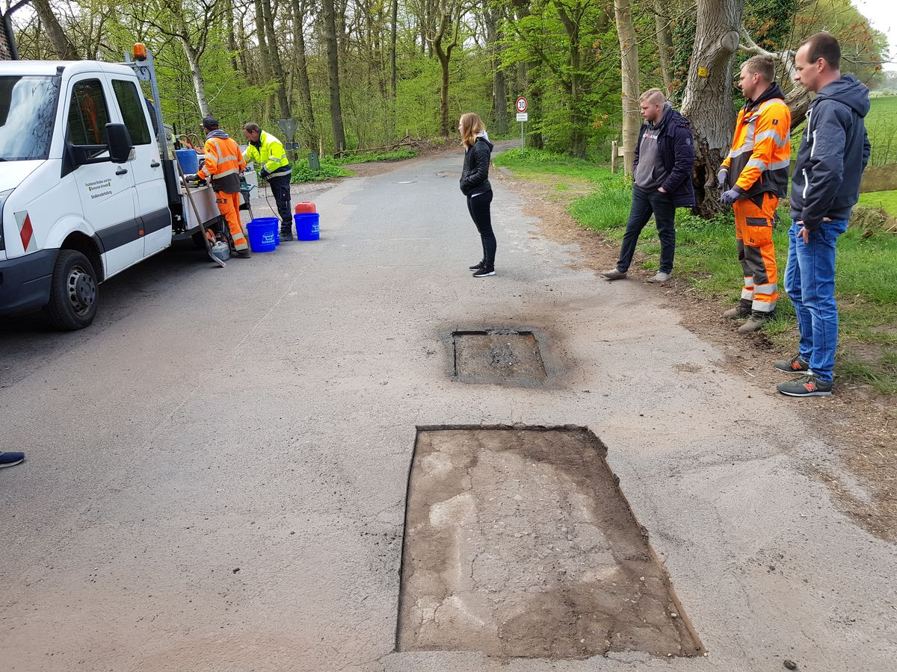
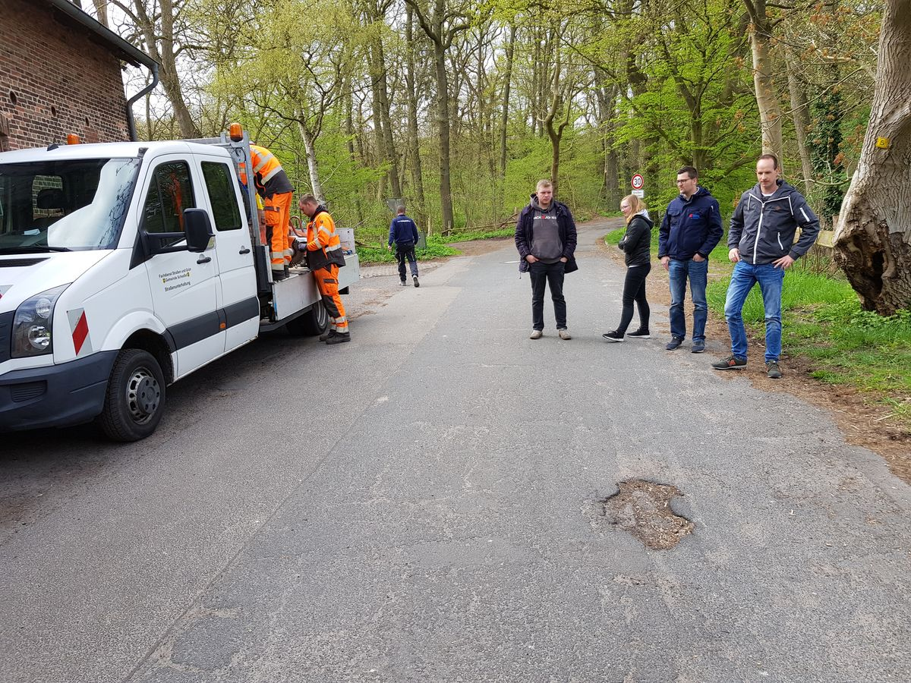

Trinkwasser schützen. Behälter sanieren.
MICROTOP TW – die mineralische, DVGW-konforme Spritzmörtel-Beschichtung für Trinkwasserbehälter. Nachhaltig, hygienisch und dauerhaft.

Warum herkömmliche Beschichtungen nicht reichen
Trinkwasserbehälter unterliegen strengsten Hygieneanforderungen. Viele Bestandsbeschichtungen erfüllen aktuelle DVGW-Normen nicht mehr – oder altern schneller als geplant.
Epoxidharz altert
Kunstharzbasierte Beschichtungen werden spröde, blättern ab und geben unter Umständen Stoffe ans Trinkwasser ab. Regelmäßige Erneuerung ist nötig.
Strenge Normen
DVGW W 300 und W 347 fordern materialspezifische Nachweise. Viele ältere Beschichtungen erfüllen die aktuellen Arbeitsblätter nicht mehr.
Es gibt eine bessere Lösung.
MICROTOP TW ist rein mineralisch, DVGW-konform und dauerhaft – die natürliche Beschichtung für Trinkwasserbehälter.

Mineralisch. Hygienisch.
DVGW-konform.
Zwei Verfahren. Ein System.
MICROTOP TW ist als Nass- und Trockenspritzverfahren verfügbar – je nach Projektanforderung.
Nassspritzverfahren
Konstanter Wasser-Zement-Wert, geringe Staubentwicklung. Ideal für Wände und Decken. Produkte: MICROTOP TW 02, TW NSM.
Trockenspritzverfahren
Pneumatische Förderung, flexible Schichtstärken. Für Reprofilierung und Egalisierung. Produkte: MICROTOP TW 3, TW 5, TW 8.
Ergänzende Produkte
MICROTOP TW BM für Bodenbeschichtung. MICROTOP TW Mineral als Feinbeschichtung. MICROTOP TW VSM als Vorspritzmörtel.
MICROTOP vs. Epoxidharz vs. Fliesen
Empfohlen MICROTOP TW |
Epoxidharz | Fliesen / Keramik | |
|---|---|---|---|
| DVGW-Konformität | W 270 / W 300 / W 347 |
Teilweise |
Eingeschränkt |
| Materialart | Rein mineralisch |
Kunstharz |
Keramisch |
| Haltbarkeit | Jahrzehnte |
10–15 Jahre |
Langlebig |
| Fugen / Schwachstellen | Fugenfrei |
Fugenfrei |
Viele Fugen |
| Nachhaltigkeit | CO₂-reduziert |
Petrochemisch |
Mineralisch |
Bewährt in der Praxis
Großprojekte in ganz Europa – von Deutschlands größten Hochbehältern bis zum Trinkwasserturm Budapest.
Hochbehälter Haidberg
Sanierung nach 50 Jahren Nutzung. MICROTOP TW 3 und TW 5 für Egalisierung und Endbeschichtung aller Wände und Stützen.
Hochbehälter Räcknitz
60.000 m³ in acht Kammern. Wand- und Deckenflächen mit MICROTOP TW 3 HOZ Spritzmörtel beschichtet.
Hochbehälter Krottenbach
Wand- und Deckenflächen im Trockenspritzverfahren beschichtet. 25 mm MICROTOP TW 5 für Egalisierung.
Technische Daten MICROTOP TW 02
Mineralischer Dünnschichtmörtel für die Nassspritz-Beschichtung.
| Kennwert | Wert |
|---|---|
| Materialart | Microsilika-vergütet, hydraulisch |
| Körnung | 0–0,2 mm |
| Applikation | Einlagig, 2–5 mm Dicke |
| Verfahren | Nassspritz-Dichtstrom (DIN 18551) |
| W/Z-Wert | ≤ 0,4 (max. 0,5) |
| Untergrund-Temperatur | Mind. 5 °C |
| Haftzugfestigkeit Untergrund | Mind. 1,5 N/mm² |
| Nachbehandlung | 10 Tage, 95 % rel. Luftfeuchte |
| Lieferform | 25-kg-Spezialverpackung |
| Haltbarkeit | Ca. 6 Monate (trocken lagern) |
Häufige Fragen
Ihr Fachberater in Ihrer Region
Projektberatung, Ausschreibungstexte, Verfahrensempfehlung – kostenlos und unverbindlich.


Projekt geplant?
Wir beraten Sie.
Kostenlose Projektberatung, Ausschreibungstexte und Verfahrensempfehlung durch unsere Fachberater.
Jetzt Fachberater anfragen